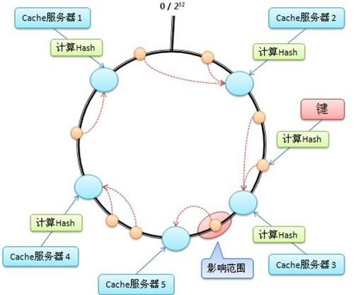
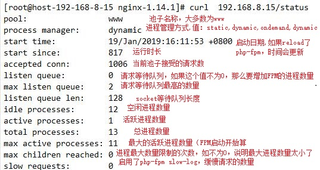
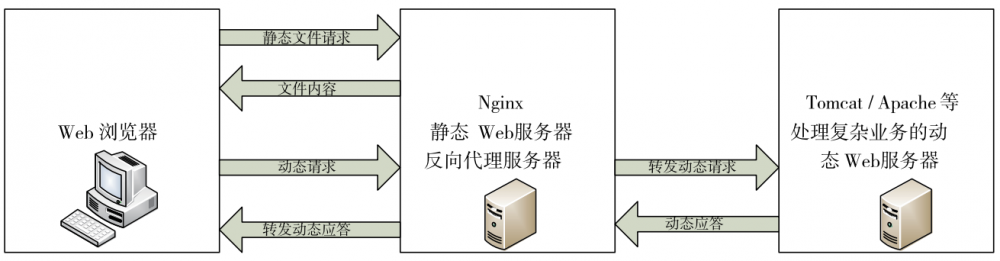
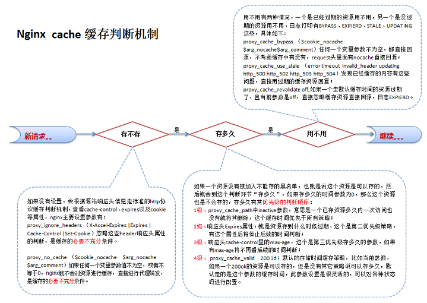
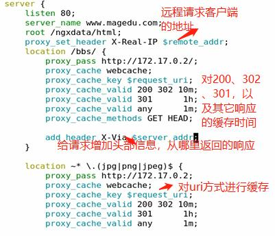

四层调度：nginx(stream module)
七层调度：nginx(http_upstream module), haproxy(mode http), httpd,
ngx_http_proxy_module
1、proxy_pass URL;
上下文:location, if in location, limit_except
假如访问index.html
注意:proxy_pass后面的路径不带uri时，其会将location的uri传递给后端主机；
server {
...
server_name HOSTNAME;
location /uri/ {
proxy_pass http://host[:port];
}
...
}
http://HOSTNAME/uri/index.html --> http://host/uri/index.html
注意:proxy_pass后面的路径是一个uri时，其会将location的uri替换为proxy_pass的uri；
server {
...
server_name HOSTNAME;
location /uri/ {
proxy_pass http://host/aaa/;
}
...
}
http://HOSTNAME/uri/index.html --> http://host/aaa/index.html
注意:如果location定义其uri时使用了正则表达式的模式,或在if语句或limt_execept中使用proxy_pass指令，则proxy_pass之后必须不能使用uri;用户请求时传递的uri将直接附加代理到的服务的之后；
server {
...
server_name HOSTNAME;
location ~|~* /uri/ {
proxy_pass http://host;
}
...
}
http://HOSTNAME/uri/index.html --> http://host/uri/index.html；
注意：proxy_pass后面的路径带uri但没有/时，其会将location的uri的后端部分追加给后端主机
server {
...
server_name HOSTNAME;
location /uri/ {
proxy_pass http://host/aaa;
}
...
}
http://HOSTNAME/uri/index.html --> http://host/aaaindex.html
2、proxy_set_header field value;
上下文:http, server, location
设定发往后端主机的请求报文的请求首部的值,如请求服务器的主机名,请求服务器名称与代理服务器的端口,真实ip，以及代理者的ip
例：
proxy_set_header Host $host;
proxy_set_header Host $host:$proxy_port;
proxy_set_header X-Real-IP $remote_addr;
proxy_set_header X-Forwarded-For $proxy_add_x_forwarded_for;
3、proxy_cache_path
上下文: http
定义可用于proxy功能的缓存
proxy_cache_path path [levels=levels] [use_temp_path=on|off] keys_zone=name:size [inactive=time] [max_size=size] [manager_files=number] [manager_sleep=time] [manager_threshold=time] [loader_files=number] [loader_sleep=time] [loader_threshold=time] [purger=on|off] [purger_files=number] [purger_sleep=time] [purger_threshold=time];
levels 指定该缓存空间有两层hash目录，第一层目录为1个字母，第二层为2个字母,levels最多三层，每层最多两个字符，这是为了加快访问文件的速度；最后使用代理url的哈希值作为关键字与文件名
keys_zone 设置这个缓存区的名称和内存缓存空间大小
inactive 设置数据多长时间没有被访问将删除
max_size 设置硬盘缓存空间大小
use_temp_path 如果为off，则nginx会将缓存文件直接写入指定的cache文件中，而不是使用temp_path存储，official建议为off，避免文件在不同文件系统中不必要的拷贝
例：
proxy_cache_path /usr/local/nginx/proxy_cache levels=1:2 keys_zone=cache_one:100m inactive=1d max_size=1g;
4、proxy_cache zone | off
上下文:http, server, location
配置一块公用的内存区域名称，该区域可以存放缓存的索引数据
指明要调用的缓存，或关闭缓存机制
5、 proxy_cache_key string;
上下文:http, server, location
缓存中用于“键”的内容；
默认值：proxy_cache_key $scheme$proxy_host$request_uri;
6、proxy_cache_valid [code ...] time;
上下文:http, server, location
定义对特定响应码的响应内容的缓存时长；
定义在http{...}中；
proxy_cache_path /var/cache/nginx/proxy_cache levels=1:1:1 keys_zone=pxycache:20m max_size=1g;
定义在需要调用缓存功能的配置段，例如server{...}；
proxy_cache pxycache;
proxy_cache_key $request_uri;
proxy_cache_valid 200 302 301 1h;
proxy_cache_valid any 1m;
7、proxy_cache_use_stale
上下文:http, server, location
确定在与后端服务器出现状况时，可以在哪些情况下使用过时的缓存响应
proxy_cache_use_stale error | timeout | invalid_header | updating | http_500 | http_502 | http_503 | http_504 | http_403 | http_404 | off
error 如果无法选择代理服务器来处理请求，则 该参数还允许使用陈旧的缓存响应。
updating 如果当前正在更新，该参数允许使用过时的缓存响应。这允许在更新缓存数据时最小化对代理服务器的访问次数。
例子：
location / {
...
proxy_cache_use_stale error timeout invalid_header updating http_500 http_502 http_503 http_504
}
8、proxy_cache_methods GET | HEAD | POST ...;
上下文:http, server, location
指定客户端那些方法被缓存，默认为GET|HEAD
9、proxy_hide_header field;
上下文:http，server，location
默认情况下，nginx不会从代理服务器对客户端的响应中传递标题字段“Date”，“Server”，“X-Pad”和“X-Accel -...”。该proxy_hide_header指令设置了不会传递的其他字段
10、proxy_connect_timeout time;
表示与后端服务器连接的超时时间，既发起握手等候相应的超时时间
默认为60s；最长为75s；
11、proxy_read_timeout time;
上下文:http，server，location
代理服务器向后端服务器请求响应的超时。仅在两个连续的读操作之间设置超时，而不是为整个响应的传输。如果代理服务器在此时间内未传输任何内容，则关闭连接。
12、proxy_send_timeout time;
上下文:http，server，location
表示
设置后端服务器传输到代理服务器的超时。仅在两次连续写入操作之间设置超时，而不是为整个请求的传输。如果代理服务器在此时间内未收到任何内容，则关闭连接
Real-IP 和 X-Forwarded-For
1.通过“proxy_set_header X-Forwarded-For $proxy_add_x_forwarded_for” 把从真实客户端IP和反向代理IP通过逗号分隔，添加到请求头中；
2.可以在第一个反向代理上配置“proxy_set_header X-Real-IP $remote_addr” 获取真实客户端IP；
3.配合realip模块从X-Forwarded-For也可以获取到真实客户端IP。
在整个反向代理链条的第一个反向代理可以不配置“proxy_set_header X-Forwarded-For $proxy_add_x_forwarded_for”，
否则客户端可以伪造X-Forwarded-For从而伪造客户端真实IP
如果服务端使用X-Forwarded-For第一个IP作为真实客户端IP，则就出问题了。
如果通过配置X-Real-IP请求头或者配合realip模块也不会出现该问题。
如果自己解析X-Forwarded-For的话，记得使用realip算法解析，而不是取第一个。
当我们进行限流时一定注意限制的是真实客户端IP，而不是反向代理IP
ngx_http_upstream_module
nginx负载均衡是ngx_http_upstream_module模块的功能，需要在配置文件http块上下文中定义upstream块，指定一组负载均衡的后端服务器，然后在上面讲到的proxy_pass中引用，就可以反向代理时实现负载均衡了
(1) upstream name { ... }
定义后端服务器组；引入一个新的上下文；只能用于http{}上下文中；
默认的调度方法是wrr；
1) server address [parameters];
定义服务器地址和相关的参数；
地址格式：
IP[:PORT]
HOSTNAME[:PORT]
unix:/PATH/TO/SOME_SOCK_FILE
参数：
weight=number
权重，默认为1；
max_fails=number
失败尝试的最大次数；
fail_timeout=time
设置服务器为不可用状态的超时时长；
backup
把服务器标记为“备用”状态；
down
手动标记其为不可用；
2) least_conn;
最少连接调度算法； 当server拥有不同的权重时为wlc；当所有后端主机的连接数相同时，则使用wrr进行调度；
3)ip_hash;
源地址hash算法；能够将来自同一个源IP地址的请求始终发往同一个upstream server；
4) hash key [consistent];
基于指定的key的hash表实现请求调度，此处的key可以文本、变量或二者的组合；
consistent：参数，指定使用一致性hash算法；
示例：
hash $request_uri consistent
hash $remote_addr
hash $cookie_name
5) keepalive connections;
可使用长连接的连接数量；每worker与后端服务保持的最大空闲长连接数量；
####hash和一致性hash的区别
1.hash
nginx的负载均衡时有一个hash $request_uri的选项，这个是类似于LVS的dh。是针对客户端访问的uri来做的绑定。这样客户端访问同一个uri的时候，会被分配到同一个服务器上去。这样提高了缓存的命中率。
过程：每个uri进行hash计算得到一个数值，这个数值除以整个节点数量取余数。（取模算法）
缺点：如果一个节点挂了，那么整个全局都会乱掉。因为整个的节点数变了，因为除数变了。
2.一致性hash
一致性hash的采用的是除数特别大，假设有一个hash环。是个闭环。
把32位二进制的整数转换为十进制后均匀分布在整个环上。hash结果是除以2的32次方-1（hash是除以）
那么结果一定是落在环上的。那么，这个点靠近谁，就缓存在谁那里
假设a节点坏了。那么下一次的计算结果就是旁边的邻居。但是邻居的缓存不会受到影响。
只是坏掉的A节点会从新去缓存。

如果后端主机宕机，请求会移动到其他的节点上去
ngx_http_headers_module
上下文: http, server, location, if in location
向由代理服务器响应给客户端的响应报文添加自定义首部，或修改指定首部的值；
1、add_header name value [always];
添加自定义首部；
add_header X-Via $server_addr; #代理服务器的地址
add_header X-Accel $server_name;
2、expires [modified] time;
expires epoch | max | off;
用于定义Expire或Cache-Control首部的值；用来对浏览器本地缓存的控制
在对响应代码头部中是否开启对“Expires”和“Cache-Control”的增加和修改操作。
可以指定一个正或负的时间值，Expires头中的时间根据目前时间和指令中指定的时间的和来获得。
epoch表示自1970年一月一日00:00:01 GMT的绝对时间
max指定Expires的值为2037年12月31日23:59:59，Cache-Control的值为10 years。
Cache-Control头的内容随预设的时间标识指定：
·设置为负数的时间值:Cache-Control: no-cache。
·设置为正数或0的时间值：Cache-Control: max-age =#，这里#的单位为秒，在指令中指定。
参数off禁止修改应答头中的"Expires"和"Cache-Control"。
ngx_http_fastcgi_module
1、fastcgi_pass address
上下文：location, if in location
address为fastcgi server的地址； ；
2、fastcgi_index name;
上下文http, server, location
fastcgi默认的主页资源;
3、fastcgi_param parameter value [if_not_empty];
设置传递给FastCGI服务器的参数值，可以是文本，变量或组合
上下文：http, server, location
4、fastcgi_cache_path path [levels=levels] [use_temp_path=on|off] keys_zone=name:size [inactive=time] [max_size=size] [manager_files=number] [manager_sleep=time] [manager_threshold=time] [loader_files=number] [loader_sleep=time] [loader_threshold=time] [purger=on|off] [purger_files=number] [purger_sleep=time] [purger_threshold=time];
上下文：http
定义fastcgi的缓存；缓存位置为磁盘上的文件系统，由path所指定路径来定义
levels=levels：缓存目录的层级数量，以及每一级的目录数量；levels=ONE:TWO:THREE
leves=1:2:2
keys_zone=name:size
k/v映射的内存空间的名称及大小
inactive=time
非活动时长
max_size=size
磁盘上用于缓存数据的缓存空间上限
5、fastcgi_cache zone | off;
上下文：http, server, location
调用指定的缓存空间来缓存数据；
6、fastcgi_cache_key string;
上下文：http, server, location
定义用作缓存项的key的字符串；
7、fastcgi_cache_methods GET | HEAD | POST ...;
上下文：http, server, location
为哪些请求方法使用缓存；
8、fastcgi_cache_min_uses number;
上下文：http, server, location
缓存空间中的缓存项在inactive定义的非活动时间内至少要被访问到此处所指定的次数方可被认作活动项；
9、fastcgi_cache_valid [code ...] time;
上下文：http, server, location
不同的响应码各自的缓存时长；
10、fastcgi_keep_conn on | off;
上下文：http, server, location
不同的响应码各自的缓存时长
11.fastcgi_connect_timeout 60;
设定Nginx服务器和后端FastCGI服务器连接的超时时间
11.fastcgi_send_timeout 60;
上下文：http, server, location
设定Nginx允许FastCGI服务端返回数据的超时时间
12.fastcgi_read_timeout 60;
上下文：http, server, location
设定Nginx从FastCGI服务端读取响应信息的超时时间
13.fastcgi_buffer_size 64k;
上下文：http, server, location
设定用来读取从FastCGI服务端收到的第一部分响应信息的缓冲区大小
14.fastcgi_buffers 4 64k;
上下文：http, server, location
设定用来读取从FastCGI服务端收到的响应信息的缓冲区大小以及缓冲区数量
15.fastcgi_busy_buffers_size 128k;
上下文：http, server, location
设定系统很忙时可以使用的fastcgi_buffers大小，推荐大小为fastcgi_buffers *2
16.fastcgi_temp_file_write_size 128k;
上下文：http, server, location
fastcti临时文件的大小，可设置128-256K
fastcgi配置
nginx代理通过ngx_http_fastcgi_module这个模块，将收到php程序的请求后就转发到后台FastCGI服务器处理，这里nginx可以把php-fpm服务运行在同一机器上，也可以将nginx和php-fpm分离在两台机器上。但是，nginx不支持php模块方式,只能是php-fpm模式。
httpd 使用php_module
prefork模型 php_module
worker、event zts_module
httpd (proxy、proxy_fcgi模块)-->fcgi协议-->php
fpm:fastcgi process manager
配置示例1：
前提：配置好fpm server和mariadb-server服务；
location ~* \.php$ {
root /usr/share/nginx/html;
fastcgi_pass 127.0.0.1:9000;
fastcgi_index index.php;
fastcgi_param SCRIPT_FILENAME /usr/share/nginx/html$fastcgi_script_name;
include fastcgi_params; #fastcgi_params 文件中含有各个nginx常量的定义
}
配置示例2：通过/pm_status和/ping来获取fpm server状态信息；
在/etc/php-fpm.d/www.conf 开启，
pm.status_path = /status #默认情况下为/status
ping.path = /ping
nginx配置
在默认主机里面加上location或者你希望能访问到的主机里面
location ~* ^/(pm_status|ping)$ {
include fastcgi_params;
fastcgi_pass 127.0.0.1:9000;
fastcgi_param SCRIPT_FILENAME $fastcgi_script_name; #脚本文件
}

php-fpm状态页可以通过带参数实现个性化，可以带参数json、xml、html、full做一个组合。
curl http://127.0.0.1/status?json
curl http://127.0.0.1/status?xml
curl http://127.0.0.1/status?html
curl http://127.0.0.1/status?full
php-fpm状态页非常使用，使用zabbix或者nagios监控可以考虑使用xml或者默认方式。用web的话，推荐使用html，表格会比较清晰
七层反向代理

接受Internet上的连接请求,然后将请求转发给内部网络中的上游服务器，并将从上游服务器上得到的结果返回给Internet上请求连接的客户端，此时代理服务器对外的表现就是一个Web服务器
允许传送请求到其它服务器，也就是做反向代理
例：
1.反向代理，后端服务器负载均衡
http {
....
upstream dynamic {
server backend1.example.com weight=5;
server backend2.example.com:8080 max_fails=3; fail_timeout=5s ;
server 192.0.2.1 max_fails=3;
server backup1.example.com:8080 backup;
server backup2.example.com:8080 backup;
}
server {
...
location / {
proxy_pass http://dynamic;
proxy_redirect default;
proxy_set_header Host $host; #表明请求的服务器主机名
proxy_set_header X-Real-IP $remote_addr; #后端的Web服务器获取用户真实IP
proxy_set_header X-Forwarded-For $proxy_add_x_forwarded_for;
proxy_connect_timeout 2; #nginx跟后端服务器连接超时时间(代理连接超时)
proxy_send_timeout 5; #后端服务器数据回传时间(代理发送超时)
proxy_read_timeout 5; #连接成功后，后端服务器响应时间(代理接收超时)
proxy_buffer_size 256k; #设置代理服务器（nginx）保存用户头信息的缓冲区大小
proxy_buffers 4 128k; #proxy_buffers缓冲区
proxy_busy_buffers_size 256k; #高负荷下缓冲大小（proxy_buffers*2）
proxy_temp_file_write_size 64k; #设定缓存文件夹大小，大于这个值，将从upstream服务器传
}
}
}
2.动静分离是让动态网站里的动态网页根据一定规则把不变的资源和经常变的资源区分开来
动静分离将网站静态资源（HTML，JavaScript，CSS，img等文件）与后台应用分开部署，提高用户访问静态代码的速度，降低对后台应用访问
//动态资源
location /bbs/\.(jsp|jspx|do|action)(\/.*)?$ {
proxy_set_header real_ip $remote_addr; //real_ip设置变量名，可以通过web端获取
proxy_pass http://172.18.0.2;
}
//静态资源
location ~ .*\.(js|css|htm|html|gif|jpg|jpeg|png|bmp|swf|ioc|rar|zip|txt|flv|mid|doc|ppt|pdf|xls|mp3|wma)$ {
proxy_pass http://172.18.0.2;
expires 30d； 缓存过期时间
}
四层反向代理
ginx从1.9.0开始，新增加了一个stream模块，用来实现四层协议的转发、代理或者负载均衡等。
基于ip+port,不会对IP做多余的修改，转发到后端，类似DNAT
ngx_stream_core_module
(1) listen address:port [ssl] [udp] [backlog=number] [bind] [ipv6only=on|off] [reuseport] [so_keepalive=on|off|[keepidle]:[keepintvl]:[keepcnt]];
监听的端口；
默认为tcp协议；
udp: 监听udp协议的端口；
listen 127.0.0.1:12345;
listen *:12345;
listen 12345; # same as *:12345
listen localhost:12345;
ngx_stream_proxy_module
1.proxy_pass address;
设置代理服务器的地址。地址可以指定为域名或IP地址，以及端口
proxy_pass localhost：12345
proxy_pass unix：/tmp/stream.socket;
proxy_pass $ upstream;
2.proxy_timeout timeout;
默认为10m;
3.proxy_connect_timeout time;
设置nginx与被代理的服务器尝试建立连接的超时时长；默认为60s；
示例：http上下文外
stream {
upstream sshsrvs {
server 192.168.10.130:22;
server 192.168.10.131:22;
hash $remote_addr consistent;
}
server {
listen 172.16.100.6:22202;
proxy_pass sshsrvs;
proxy_timeout 60s;
proxy_connect_timeout 10s;
}
}
缓存

Nginx对客户已经访问过的内容在Nginx服务器本地建立副本，这样在一段时间内再次访问该数据，就不需要通过Ｎginx服务器再次向后端服务器发出请求，所以能够减少Ｎginx服务器与后端服务器之间的网络流量，减轻网络拥塞，同时还能减小数据传输延迟，提高用户访问速度。
同时，当后端服务器宕机时，Nginx服务器上的副本资源还能够回应相关的用户请求
proxyBuffer开启后才能使用proxy_cachhe。将已有的数据在内存中建立缓存数据，缓存过期不销毁硬盘的数据，nginx接受到被代理服务器的数据后，通过proxybuffer机制将数据传递给客户端，通过proxycache将数据缓存到本地硬盘
定义缓存：
proxy_cache_path
fastcgi_cache_path
调用缓存
proxy_cache
fastcgi_cache
proxy_cache
例：

1.proxy_cache的最基本的配置
proxy_cache_path /path/to/cache levels=1:2 keys_zone=my_cache:10m max_size=10g inactive=60m use_temp_path=off;
server {
...
add_header Magedu-Cache "$upstream_cache_status form $server_addr";#给请求响应增加一个头部信息，表示从服务器上返回的cache状态怎么样（有没有命中）
upstream web {
server backend1.example.com;
server backend2.example.com;
}
}
location / {
proxy_pass http://web; #引用上面定义的upstream负载均衡组
proxy_cache my_cache; #引用上面定义上的缓存空间，同一缓存空间可以在几个地方使用
proxy_cache_valid 200 302 10m;
proxy_cache_valid 404 1m; #对代码200和302的响应设置10分钟的缓存，对代码404的响应设置为1分钟:
}
}
2.多磁盘分割缓存
使用NGINX，不需要建立一个RAID（磁盘阵列）。如果有多个硬盘，NGINX可以用来在多个硬盘之间分割缓存。
proxy_cache_path /path/to/hdd1 levels=1:2 keys_zone=my_cache_hdd1:10m max_size=10g inactive=60m use_temp_path=off;
proxy_cache_path /path/to/hdd2 levels=1:2 keys_zone=my_cache_hdd2:10m max_size=10g inactive=60m use_temp_path=off;
split_clients $request_uri $my_cache {
50% "my_cache_hdd1";
50% "my_cache_hdd2";
}
server {
...
location / {
proxy_cache $my_cache;
proxy_pass http://my_upstream;
}
}
split_clients配置部分指定了请求结果的一半在my_cache_hdd1中缓存，另一半在my_cache_hdd2中缓存。
基于$request_uri（请求URI）变量的哈希值决定了每一个请求使用哪一个缓存，对于指定URI的请求结果通常会被缓存在同一个缓存中。
fastcgi_cache配置
fastcgi_cache是一个nginx的插件，用于缓存fastcgi接口的执行结果，例如缓存php的执行结果。特别是php网站的首页与一些非交互页面，利用fastcgi_cache可以大幅度提升访问速度，并且降低php的执行压力
1. 在nginx的主配置文件
在主配置文件(nginx.conf)
fastcgi_cache_path /dev/shm/nginx-cache levels=1:2 keys_zone=cgi_wpcache:200m inactive=1d;
fastcgi_cache_path:缓存文件的路径，/dev/shm/为tmfs缓存文件系统，
实际储存在内存中，所以读写IO性能更高。
levels:缓存目录的结构层次，例如1:2，缓存文件会就生成在指定目录的再下两层目录中。
keys_zone:缓存域名称，在vhost内进行缓存时需要调用。
inactive:缓存不活动时间，若缓存内容在指定时间内未被访问将会被清理出缓存域。
2. 站点配置
location / {
fastcgi_pass 127.0.0.1:9000;
fastcgi_param SCRIPT_FILENAME /data/webroot/$fastcgi_script_name;
include fastcgi_params;
fastcgi_cache cgi_wpcache;
fastcgi_cache_methods GET HEAD;
fastcgi_cache_key $request_method$host$request_uri;
fastcgi_cache_valid 200 2d;
fastcgi_ignore_headers Cache-Control Expires Set-Cookie;
add_header X-Cache “$upstream_cache_status”;
}
fastcgi_cache:指定缓存域
fastcgi_cache_methods：指定缓存的请求方式
fastcgi_cache_key：指定缓存文件的标识，这个标识会MD5转码存储在缓存域的目录下
fastcgi_cache_valid：指定缓存状态，例如上文中只缓存响应状态码为200的请求所产生的返回页面两天
fastcgi_ignore_headers：默认情况下fastcgi_cache会忽略有特殊header的请求，并不进行缓存，官网说明。但当我们添加这个参数后，这些限制将不在存在。
add_header 将会在返回请求的response的header中添加一个X-Cache字段表示是否进行了缓存。如果需要也可以在nginx日志中通过log_format添加$upstream_cache_status字段
·MISS 未命中，请求被传送到后端
·HIT 缓存命中
·EXPIRED 缓存已经过期请求被传送到后端
·UPDATING 正在更新缓存，将使用旧的应答
·STALE 后端将得到过期的应答
压力测试
ab -n 1000 -c 50 http://172.20.102.61/info.php